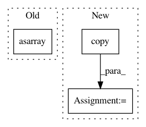

5e64c4ea0ea4a2096c794c16130b3e6e0961fac2,cnvlib/tabio/picard.py,,read_picard_hs,#Any#,37
Before Change
del dframe["length"]
dframe["start"] -= 1
dframe["gene"] = dframe["gene"].apply(unpipe_name)
coverages = np.asarray(dframe["depth"])
// Safety check
no_cvg_cnt = (coverages == 0).sum()
if no_cvg_cnt > TOO_MANY_NO_COVERAGE:
logging.warn("*WARNING* Sample %s has %d bins with no coverage",
After Change
dframe["start"] -= 1
dframe["gene"] = dframe["gene"].apply(unpipe_name)
// Avoid math domain error converting coverages to log2 scale
coverages = dframe["ratio"].copy()
no_cvg_idx = (coverages == 0)
if no_cvg_idx.sum() > TOO_MANY_NO_COVERAGE:
logging.warn("*WARNING* Sample %s has >%d bins with no coverage",
str(infile), TOO_MANY_NO_COVERAGE)
coverages[no_cvg_idx] = 2**params.NULL_LOG2_COVERAGE
dframe["log2"] = np.log2(coverages)
return dframe
def unpipe_name(name):
In pattern: SUPERPATTERN
Frequency: 3
Non-data size: 3
Instances
Project Name: etal/cnvkit
Commit Name: 5e64c4ea0ea4a2096c794c16130b3e6e0961fac2
Time: 2016-08-22
Author: eric.talevich@gmail.com
File Name: cnvlib/tabio/picard.py
Class Name:
Method Name: read_picard_hs
Project Name: rasbt/mlxtend
Commit Name: f1dd50395b7021c5194b3bd8e5c2900873c91f35
Time: 2015-03-13
Author: se.raschka@me.com
File Name: tests/tests_classifier/test_perceptron.py
Class Name:
Method Name:
Project Name: DistrictDataLabs/yellowbrick
Commit Name: c5b2346c03ba5b8aaadf6a4037b1939e9f3063a2
Time: 2018-03-05
Author: benjamin@bengfort.com
File Name: tests/test_features/test_scatter.py
Class Name: ScatterVizTests
Method Name: test_integrated_scatter